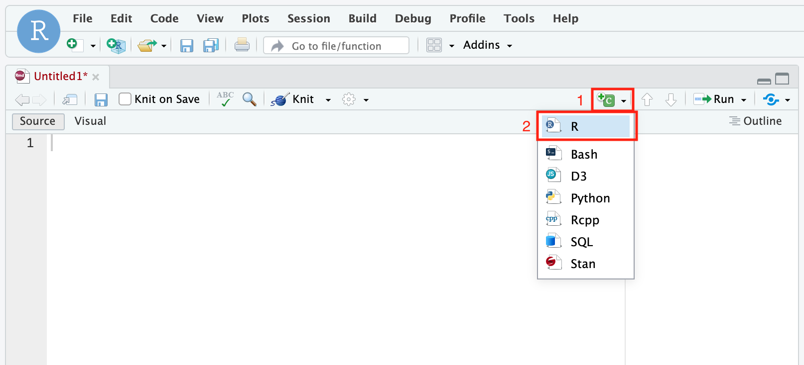
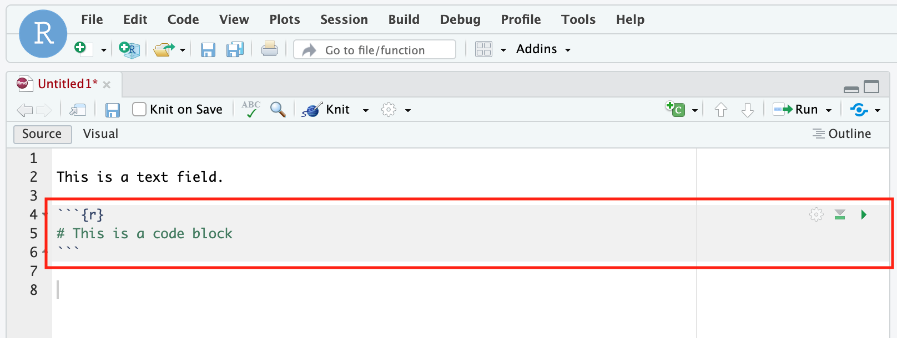

Chapter 6 Using R Markdown
Before going into more details of R Markdown, let’s talk about two common options in the world of R coding: the R script (.R) and the dynamic R Markdown document (.Rmd).
R Scripts: Imagine coding as crafting a detailed recipe of R commands—a script—that guides R through specific tasks. Conventional R scripts (.R files) are dedicated to these commands, handling calculations and operations. However, as scripts grow, they become complex and sharing insights alongside code becomes challenging.
R Markdown: R Markdown (.Rmd) elevates the coding experience by harmonizing code with explanatory text. Within an R Markdown document, code blocks act like individual scripts—smaller, more focused units. These blocks merge code with explanations seamlessly, creating a coherent narrative. Unlike isolated scripts, R Markdown emphasizes both code functionality and its significance within the context. For these reasons, we’ll be sticking to working in .Rmd files.
In a nutshell, R Markdown allows you to analyse your data with R and write your report in the same place (this entire book was written with rmarkdown). This has loads of benefits including a reproducible workflow, and streamlined thinking. No more flipping back and forth between coding and writing to figure out what’s going on.
Let’s run some simple code as an example:
## [1] 4What we’ve done here is write a snippet of R code, ran it, and printed the results (as they would appear in the console). While the above code isn’t anything special, we can extend this concept so that our R markdown document contains any data, figures or plots we generate throughout our analysis in R. For example:
library(tidyverse)
library(knitr)
airPol <- read_csv("data/2018-01-01_60430_Toronto_ON.csv")
ggplot(data = airPol,
aes(x = date.time,
y = concentration,
colour = pollutant)) +
geom_line() +
theme_classic()Figure 6.1: Time series of 2018 ambient atmospheric O3, NO2, and SO2 concentrations (ppb) in downtown Toronto
sumAirPol <- airPol %>%
drop_na() %>%
group_by(city, naps, pollutant) %>%
summarize(mean = mean(concentration),
sd = sd(concentration),
min = min(concentration),
max = max(concentration))
knitr::kable(sumAirPol, digits = 1)| city | naps | pollutant | mean | sd | min | max |
|---|---|---|---|---|---|---|
| Toronto | 60430 | NO2 | 20.5 | 11.5 | 7 | 55 |
| Toronto | 60430 | O3 | 19.7 | 8.7 | 1 | 33 |
| Toronto | 60430 | SO2 | 1.1 | 0.3 | 1 | 3 |
Pretty neat, eh? You might not think so, but let’s imagine a scenario you’ll encounter soon enough. You’re about to submit your assignment, you’ve spent hours analyzing your data and beautifying your plots. Everything is good to go until you notice at the last minute you were supposed to subtract value x and not value y in your analysis. If you did all your work in Excel (tsk tsk), you’ll need to find the correct worksheet, apply the changes, reformat your plots, and import them into word (assuming everything is going well, which is never does with looming deadlines). Now if you did all your work in R markdown, you go to your one .rmd document, briefly apply the changes and re-compile your document.
6.1 Getting started with rmarkdown
As you’ve already guessed, R markdown documents use R and are most easily written and assembled in RStudio. If you have not done so, revisit Chapter 1:[Installing R]. Once setup with R and R Studio, you’ll need to install the rmarkdown and tinytex packages by running the following code in the console:
# These are large packages so it'll take a couple of minutes to install
install.packages("rmarkdown") # downloaded from CRAN
install.packages("tinytex")
tinytex::install_tinytex() # install TinyTeXThe rmarkdown package is what we’ll use to generate our documents, and the tinytex package enables compiling documents as PDFs. There’s a lot more going on behind the scenes, but you shouldn’t need to worry about it.
Now that everything is setup, you can create your first R Markdown document by opening up R Studio, selecting FILE -> NEW FILE -> Rmarkdown. A dialog box will appear asking for some basic input parameters for your R markdown document. Add your title and select PDF as your default output format (you can always change these later if you want). A new file should appear that’s already populated with some basic script illustrating the key components of an R markdown document.
6.1.1 Understanding rmarkdown
Your first reaction when you opened your newly created R markdown document is probably that it doesn’t look anything at all like something you’d show your prof. You’re right, what you’re seeing is the plain text code which needs to be compiled (called knit in R Studio) to create the final document. When you create a R markdown document like this in R Studio a bunch of example code is already written. You can compile this document (see below) to see what it looks like, but let’s break down the primary components. At the top of the document you’ll see something that looks like this:
---
title: "Temporal Analysis of Foot Impacts While Birling Down the White Water"
author: "Jean Guy Rubberboots"
date: "24/06/2021"
output: pdf_document
---This section is known as the preamble and it’s where you specify most of the document parameters. In the example we can see that the document title is “Temporal Analysis of Foot Impacts While Birling Down the White Water”, it’s written by Jean Guy Rubberboots, on the 24th of June, and the default output is a PDF document. You can modify the preamble to suit your needs. For example, if you wanted to change the title you would write title: "Your Title Here" in the preamble. Note that none of this is R code, rather it’s YAML, the syntax for the document’s metadata. Apart from what’s shown you shouldn’t need to worry about this much, just remember that indentation in YAML matters.
Reading further down the default R markdown code, you’ll see different blocks of text. In R markdown anything you write will be interpreted as body text (i.e. stuff like this that you want folks to read) in the knitted document. To actually run R code you’ll need to see the next section.
6.1.2 Running code in rmarkdown
6.1.2.1 How to create code chunks
To create a code chunk within RStudio, you have several options:
- Use the green “c” button located at the top right corner of your file view and select “R”. Make sure your cursor is positioned at the desired location within your .rmd file when you do this.

- Type
```{r}– three back-ticks followed by{r}– to initiate a new code chunk, and type```– three backticks (```) – to end the code chunk. You can specify code chunks options in the curly braces. i.e.```{r, fig.height = 2}sets figure height to 2 inches. See the Code Chunk Options section below for more details.

- Inline code expression, which starts with
`rand ends with`in the body text. Earlier we calculatedx <- 2 + 2, we can use inline expressions to recall that value.
6.1.2.2 How to run code chunks
To run code within an R Markdown document, you again have various options to choose from.
- You can run a specific code chunk by clicking the green triangle button located within each chunk. This action will execute the entire chunk, including all the code it contains.

- For more control, you can run selected lines or chunks. To do this, use the “Run” button at the top of the file view. This button provides a range of execution options that allow you to run code in a manner that suits your needs.
- You can compile your entire document using the Knit document button. This is a great way to tinker with your code before you compile your document. Knitting will sequentially run all of your code chunks, generate all the text, knit the two together and output a PDF. You’ll basically save this for the end.

Note all the code chunks in a single markdown document work together like a normal R script. That is if you assign a value to a variable in the first chunk, you can call this variable in the second chunk; the same applies for libraries. Also note that every time you compile a markdown document, it’s done in a “fresh” R session. If you’re calling a variable that exist in your working environment, but isn’t explicitly created in the markdown document you’ll get an error.
6.2 Compiling your final report
To create a PDF to hand in, you’ll need to compile, or knit, your entire markdown document as mentioned above. To knit your R markdown script, simply click the knit button in R Studio (yellow box, Figure 2). You can specify what output you would like and R Studio will (hopefully) compile your script. Remember, you can test or run individual code chunks as outlined in Running code in rmarkdown.
6.4 R Markdown resources
There’s a plethora of helpful online resources to help hone your R markdown skills. We’ll list a couple below (the titles are links to the corresponding document):
- Chapter 2 of the R Markdown: The Definitive Guide by Xie, Allair & Grolemund (2020). This is the simplest, most comprehensive, guide to learning R markdown and it’s available freely online.
- The R markdown cheat sheet, a great resource with the most common R markdown operations; keep on hand for quick referencing.
- Bookdown: Authoring Books and Technical Documents with R Markdown (2020) by Yihui Xie. Explains the
bookdownpackage which greatly expands the capabilities of R markdown. For example, the table of contents of this document is created withbookdown.